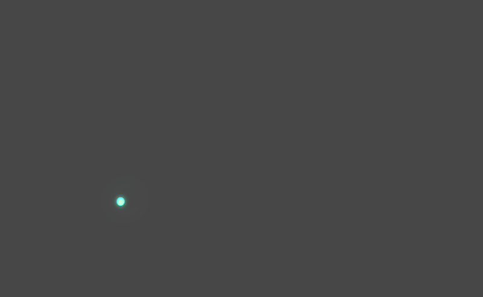

R言語の遊び方
ggplot2でかっこいいアニメーションをつくろう
dplyrやggplot2などを使って少しずつ変化するプロットを作成し、アニメーションさせるコードを紹介します。R言語を使っていますが、統計やデータ分析の話は出てきません
はじめに
先日、次のような動画（YouTubeでも見れます）をつくりました。この記事は、この動画をつくるのに使ったR言語のコードの一部を整理したうえで紹介するものです。
A short animation inspired by the Magical trail shader created by Jason Labbe using p5.js. Three animated scenes were generated in R and combined using a video editor.
この動画は、3つのシーンから構成されています。各シーンでは1本ずつシアンの曲線が軌跡として描画されていて、軌跡が描かれるのにしたがって、軌跡が通過したあたりから黄色のパーティクルが出現しています。ここでは、これら3つのシーンのうち、3番めのシーンのような、シンプルな直線の軌跡とともにパーティクルを描くコードを見ていきます。
Rは、しばしば、統計やデータ分析を便利におこなうのに特化したプログラミング言語として紹介されます。実際、この記事を読んでいる読者の多くも、おそらく第一には、Rは仕事や研究のための道具であると考えていることでしょう。この記事は、特段そういう考え方を否定するものではありませんが、私がここで伝えたいと思っているのは、私たちは、もっとRを自由に使うことができるのではないかということです。
たとえば、大工になるためにノコギリで音楽を奏でることに習熟する必要はない気がしますが、ノコギリで音楽を奏でてみることは、きっと、ノコギリがどんな道具なのかを知るための手がかりになることでしょう。みなさんが、この記事をきっかけとして、Rがどんな道具であり、どのような点が便利なのかを再発見してくれたらうれしいです。
このページはquarto-liveを使っているので、次のようなコードブロックはWebRで実際に実行してみることができます。試しに”Run Code”を押してみてください。
この上に黒い画像が表示されたはずです。このggplotオブジェクトをキャンバスとして使うことにして、まずは、ここにgeom_point()で描き加えるための点列を用意していきましょう。
データの準備
軌跡のデータ
早速ですが、みなさんは、Rで先ほど見たような軌跡を用意する方法を知っていますか？

たとえばこんな軌跡を描きたいと思っているのですが、これはどうやって描けばよいのでしょうか。このシアンの軌跡をよく観察すると、これは始点と終点をまっすぐに結んだだけの直線ではなく、見た感じ、手描きの線のようにランダムに揺らいでいる線であることがわかります。
そもそも、私がこれをつくるのに参考にしたMagical trail shaderは、p5.jsで書かれている作品で、マウスカーソルの位置を入力として受け取って、軌跡を描画する仕組みのものです。一方、私たちが使っているR言語のグラフィックデバイスでは、p5.jsのキャンバスのように、マウスカーソルがある位置を柔軟に取得することはできません。1
したがって、このような軌跡を再現するには、私たちが何気なくマウスを動かしたときのような軌跡を模倣するコードを書く必要があります。しかし、それはRで簡単に書くのは難しいため、ここではズルをすることにしましょう。arevi/wind-mouseというJavaScriptのコードを元にして、マウスを動かしたときのような軌跡を生成するC++のコードを準備しました。次のRパッケージに収録しているので、これを使うことにします。
具体的にはrasengan::wind_mouse()という関数を使います。このrasenganパッケージは、このページのWebRの環境にはすでにインストールされているので、次のコードブロックから試せます。
Note
WebRのコードブロックは、とりあえず掲載している順に1回ずつ、とばさずに実行していってください
ここでは、先ほど用意したキャンバスに、生成した点列を黄色の点として描画しています。何回か”Run Code”を押してもらうとわかると思いますが、この関数はstartからendまでのあいだを手描き風に結んだ点列をデータフレームとして返します。ここでは、軌跡のデータdatはx, y, tとid列の4列からなり、キャンバスの左半分のどこかから、右半分のどこかに向かう線がランダムに描かれるようにしています。
パーティクルのデータ
次に、パーティクルの元となるデータをつくっておきます。見本のアニメーションをもう一度見てみましょう。
黄色のパーティクルに注目すると、軌跡に伴われるパーティクルは、軌跡が通過したあたりから順に出現して、それぞれのスピード・方向をもって移動していることがわかると思います。つまり、パーティクルの元データparticlesは、パーティクルの出現位置となる、軌跡の各時刻におけるx, y座標と、速度velocity、また、それぞれのパーティクルが向かう方向angleを保持している必要があります。
次のような感じです。
なお、rasengan::wind_mouse()の仕様で、生成された軌跡の点列では、2点のあいだの移動量にムラがあります。ここでは、すべての時刻における点からパーティクルを発生させるのではなく、一つ後ろの点への移動量が5に満たない場合には、パーティクルを新たに出さないように設計しています。mag()はその計算のためのスニペットで、行列かデータフレームを受け取って、各行について一つ後ろの行とのあいだのユークリッド距離を返しているものです。
ちなみに、ここで用意しているtibbleはpositionやvelocity列の値として行列をもっています。dplyrやtidyrを使った通常のデータハンドリングにおいても、セルにtibbleをネストさせることはあるかもしれませんが、このように列の値に行列をもつことはあまりおこなわれないので、そもそもこういうかたちのtibbleをつくれることを知らなかった人もいるかもしれません。2
ここでは、この後でやるように点列の位置をまとめてアフィン変換するのにXY座標を行列のかたちでもっておくと都合がよいため、このようにしています。
アニメーションの実装
軌跡を切り取る
それでは、実際にアニメーションをつくるためのコードを見ていきましょう。
ggplot2と組み合わせてアニメーションをつくるには、ふつうはgganimateを使います。しかし、gganimateは基本的にデータフレーム中のkeyに応じて一つのグラフを描き分けることによって、アニメーションの各フレームを生成するといった仕組みのものであるため、ここでつくりたいようなアニメーションをgganimateでつくるためには、各フレームにおける軌跡とパーティクルの位置をあらかじめすべて計算してしまったうえで、それぞれを巨大なデータフレームとしてまとめておく必要があります。
おそらく、そっちのほうが「Rっぽい」書き方ではあるのですが、ここでつくりたいようなアニメーションのロジックをそういう書き方に移植するのはかなり手間なので、ここではgganimateは使わない方針でいきます。gganimateを使わなくても、tweenrの関数を直接使えばイージングアニメーションをつくることは可能です。
ここでは、25fpsで3秒（75フレーム）のアニメーションをつくることにしましょう。まず、軌跡は、点として出現したら出しっぱなしにするのではなく、経過時間に応じて短くなるようにします。そのために、経過時間に応じてremove_countを増加させ、remove_countの数だけ前から取り除いていきます。
このtrim_trail()のframe引数にフレーム番号を与えると、そのフレームにおける切り取られた軌跡が返されるので、それをforループか何かのなかでフレーム番号を増やしながら繰り返し呼び、各フレームの状態をggplot2でプロットしてから、一連のプロットをまとめてやればアニメーションになります。
パーティクルをつくる
パーティクルの部分についても、軌跡の部分と同様の方針で実装します。つまり、各フレームで描画するパーティクルの位置や属性は、フレーム番号を受け取って、元データparticlesからその都度計算します。
pop_particles()はparticlesをgen_particles()に渡してその時点におけるパーティクルを生成し、生成されたパーティクルをtrim_trail()と同様に経過時間に応じて切り詰めます。
gen_particles()は、受け取ったパーティクルの元データから、その時点において現れているパーティクルの位置と属性を計算する関数です。基本的には、古いパーティクルほど遅くなるようにvelocityにair_dragをかけながらパーティクルの移動量を計算したうえで、元の位置positionからアフィン変換しているだけのものです。
アフィン変換
アフィン変換というのは、2次元空間における線形変換のうち、直線性と平行性を保つような変換のことです。図形を移動、回転、拡大・縮小、せん断する処理はこれで書くことができます。
たとえば、次は\((x, y)\)を原点を基準として\((\text{tx}, \text{ty})\)だけ移動させつつ、角度\(\theta\)だけ回転させる変換です。
\[ \begin{bmatrix} x' \\ y' \\ 1 \end{bmatrix} = \begin{bmatrix} \cos\theta & -\sin\theta & \text{tx} \\ \sin\theta & \cos\theta & \text{ty} \\ 0 & 0 & 1 \end{bmatrix} \begin{bmatrix} x \\ y \\ 1 \end{bmatrix} \]
なお、Reduce()に相当する処理は、ふつうはpurrr::reduce()を使って書きます。ここではWebRでダウンロードされるパッケージの数を減らすために、あえてReduce()を使っています。
アニメーションの確認
準備はできたので、試しにフレームをプロットしてみましょう。プロットをおこなう関数はこんな感じにしておきます。
とくに必須ということではないですが、軌跡の部分については、点がある程度つながっているように描かれてほしいので、ggfx::with_motion_blur()を使って、弱めのモーションブラーをかけています。
次のコードブロックで、各フレームの状態をインタラクティブに確認することができます。
こうして準備したdraw_trail()を使って、次のようにして生成したGIFアニメーションが、先ほどから見ていた見本になります。なお、パーティクルなどに「光っている」ように見える効果を付けるために、ここでは次のRパッケージを利用して、生成した各フレームの画像に拡散フィルタをかけています。
fps <- 25
canvas_size <- dev.size(units = "px")
# フレームの書き出し
ragg::agg_png("public/pictures/%04d.png", width = canvas_size[1], height = canvas_size[2], background = "transparent")
purrr::iwalk(seq(1, fps, length.out = 75), \(frame, i) { # in frames
trail <- trim_trail(dat, frame)
particle <- pop_particles(particles, frame)
draw_trail(trail, particle, canvas)
}, .progress = TRUE)
dev.off()
# GIFアニメーションの作成
png_files <- fs::dir_ls("public/pictures/", glob = "*.png")
dir <- tempdir()
new_files <-
purrr::imap(unname(png_files), \(f, i) {
png <- readBin(f, what = "raw", n = file.info(f)$size) |>
aznyan::diffusion_filter(factor = 8)
path <- paste0(dir, "/", stringr::str_pad(i, 4, "left", "0"), ".png")
writeBin(png, con = path)
path
}, .progress = TRUE) |>
unlist(use.names = FALSE)
gifski::gifski(new_files, "magical-trail.gif", delay = 1 / fps, progress = TRUE)むすび
この記事では、Magical trail shaderを参考にしたロジックの実装例として、シアンの軌跡がパーティクルを伴って描かれるアニメーションをつくるためのRのコードを紹介しました。
R言語は、おもに統計やデータ分析をおこなうのに便利なプログラミング言語であり、オブジェクト指向っぽいコードを書くのにはあまり適していません。そのため、何かのアプリケーションや、ゲームなどをつくるのには不向きなのですが、こういったクリエイティブコーディング的なことをするのには、意外と便利な側面もそなえています。
たとえば、データフレームや行列といったデータ構造が標準機能として組み込まれている点や、基本的な計算がベクトライズされていることにくわえて、dplyrなどのパッケージが使えることで、そうしたデータ構造を使った計算処理を比較的シンプルに書ける点などは、こうしたコードを書くうえでなかなか魅力的だと思います。また、QuartoやRMarkdownのようなノートブック形式のファイルのなかで、手軽に実行してみることができるところも非常に便利なポイントです。
一方で、実際にRで凝ったアニメーションをつくろうとすると、体験として不便な側面もあります。とくに、Rではアニメーションを試しに再生しながらリアルタイムに確認できる手段がないため、実際のコーディングでは、いくつかフレーム単位で書き出して見た目をチェックしてから、試しに短めのアニメーションをレンダリングしてみて、よさそうなら本番のレンダリングをするといった試行錯誤が必要になります。これは、こうした作品をつくるうえである程度は仕方がないことなのですが、「試しに再生してみる」ステップを繰り返すのに若干時間がかかるというのは、アニメーションをつくるうえではストレスになりやすいです。
次の動画もRで書いたコードでつくられているアニメーションですが、これをつくる作業も、コーディングそのものがというよりは、待ち時間がいちいち長いところがストレスでした。
そのあたりはやはり向き不向きのあるところだろうと思うので、やりたいことの目的にあわせて、Rやほかの言語を賢く選択できればよいのかなと思います。